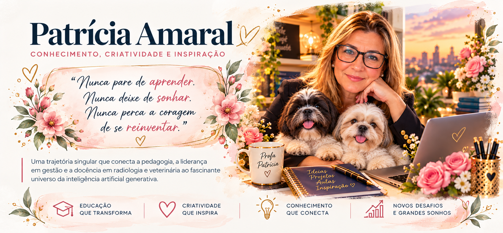

Vídeos e animações
Assista às minhas criações em vídeo, reunindo arte, afeto e imaginação.

Minha trajetória começou na educação, passou pelo universo da Economia, pela liderança em gestão e por novos caminhos na Radiologia e na docência. Cada experiência trouxe aprendizados e abriu portas para outras possibilidades.
Hoje, encontro na criatividade e na inteligência artificial novas formas de transformar ideias em imagens, vídeos, histórias e inspiração. Acredito que sempre existe tempo para aprender algo novo e se reinventar.
Um lugar para reunir minhas experiências com inteligência artificial: vídeos, animações, imagens e projetos que dão vida à imaginação.
Assista às minhas criações em vídeo, reunindo arte, afeto e imaginação.
Composições visuais, personagens e experiências criativas desenvolvidas com IA.
Ideias que misturam tecnologia, sensibilidade, aprendizado e expressão pessoal.
Minha primeira criação em vídeo, compartilhando afeto, imaginação e novas possibilidades com inteligência artificial.
Assista aqui ou abra o vídeo no YouTube. © Patrícia Amaral. Reprodução não autorizada.
A educação faz parte da minha história. Aqui, conhecimento e criatividade se encontram para tornar o aprendizado mais próximo, visual e inspirador.
Conteúdos educativos preparados para facilitar a compreensão e despertar a curiosidade.
Infográficos, histórias ilustradas e recursos que transformam conceitos em imagens.
Experiências, ferramentas e possibilidades para uma aprendizagem criativa.
“Nunca pare de aprender. Nunca deixe de sonhar. Nunca perca a coragem de se reinventar.”
Porque toda nova descoberta pode ser o começo de uma história bonita.
Aqui vamos reunir reflexões, novidades, descobertas e experiências que merecem ser compartilhadas.
Em breve, vamos adicionar aqui o canal de contato que você preferir. Por enquanto, esta seção está preparada, sem divulgar dados pessoais.